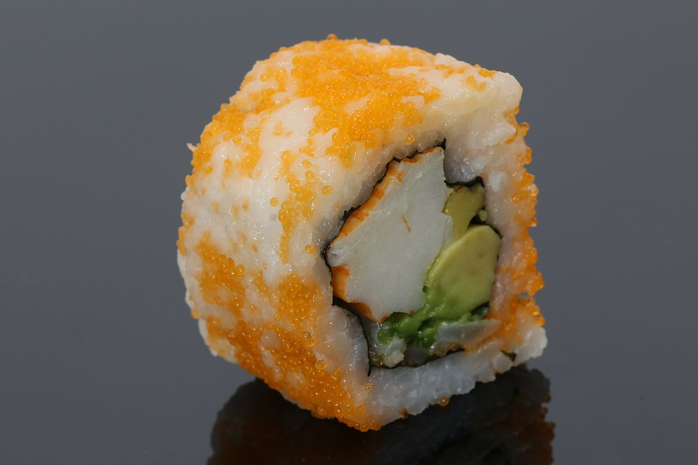

California Roll

A single california roll slice
California roll or California maki is an uramaki containing imitation crab, avocado, and cucumber.
Sometimes crab salad is substituted for the crab stick,
and often the outer layer of rice is sprinkled with toasted sesame seeds or roe.
Ingredients
- Sushi rice
- Rice vinegar
- Crab Meat (Immitation works too)
- Avocado
- Cucumber
- Nori (Seaweed sheets)
- Optional: Toasted seasame seeds, spicy mayo
Steps
- Cook sushi rice and season with rice vinegar.
- While rice is cooking, slice avocado, cucumber, and crab into strips. Remove cucumber seeds.
- Lay plastic wrap on your sushi mat so the rice doesn't stick to the mat.
- On your sushi mat lay a half sheet of nori, spread rice on the nori leaving a small section uncovered on top.
- Flip the nori so the rice is face down, lay a strip of avocado, cucumber, and crab in the centre of the nori.
- Lift the bottom edge of the mat while keeping the fillings in place and roll the nori over.
- Squeeze to compress the fillings once it has been rolled.
- Use a sharp, wet knife to cut the roll into slices of desired thickness. Top with seasame seeds and/or spicy mayo.